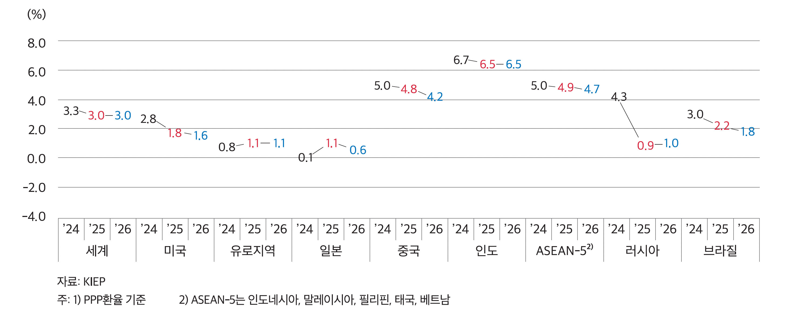

2026 경제·경영 환경 전망
2026년 세계경제,
‘완충된 둔화’와 비대칭의 시대
2026년 세계경제는 급락을 피했지만 저성장이 장기화되는 국면이다. 비대칭적 성장과 관세·재정·기술 리스크가 교역과 산업에 어떤 영향을 미칠지 짚어본다.
글 최병일 법무법인 태평양 통상전략혁신 허브 원장
세계경제, 올해와 내년 3% 안팎 성장에 머무를 전망
대외경제정책연구원(KIEP)은 2025년 11월 발표한 보고서에서 2026년 세계경제 성장률을 3.0%로 전망했다. 2025년과 같은 수준이지만, 코로나 이전 5년 평균과 비교하면 분명 낮다. 다만 올해 들어 미국과 중국 등 주요국 성장과 교역이 우려보다는 견조해, 지난 2025년 5월 전망 때보다 2025년 및 2026년 성장률이 소폭 상향됐다. 관세 충격과 지정학적 긴장이 이어지지만 공급망 조정과 AI 설비투자가 완충 장치 역할을 하며 급격한 경기 추락은 피하고 있다는 의미다.
이런 맥락에서 2026년 세계경제를 요약하는 키워드는 ‘완충된 둔화, 비대칭의 시대’이다. 전체적으로는 저성장이지만, 국가·산업·기업에 따라 성장과 리스크의 체감 정도가 크게 엇갈리고 있다.
주요국별로 갈라지는 성장 경로
주요 선진국은 공통적으로 1% 안팎의 낮은 성장세에 머문다. 미국은 2025년 1.8%에서 2026년 1.6%로 둔화될 전망이며, 고용 및 소비 둔화와 긴축의 후유증, 재정 긴축이 복합적으로 작용한다. 다만 AI 관련 제조업 설비투자가 투자와 생산을 떠받치며 ‘침체는 아닌 둔화’ 국면을 만들고 있다.
유로지역은 2026년 성장률 1.1%로 2025년과 비슷한 저성장을 이어간다. 무역갈등과 대외 수요 부진으로 수출과 설비투자가 약한 반면, 임금 상승과 복원기금(RRF)을 통한 공공투자가 내수를 지지한다. 물가 안정과 유럽중앙은행(ECB)의 점진적 금리인하가 상방을 열지만, 재정과 정치 불확실성이 회복 속도를 제한한다.
일본은 2025년 1.1%에서 2026년 0.6%로 둔화된다. 미·중 관세갈등으로 수출과 설비투자가 부진한 가운데, 임금이 물가를 따라가지 못해 실질소득이 줄고 소비에도 한계가 있다.
신흥국의 경우에도 구도가 뚜렷이 갈린다. 중국은 2025년 4.8%에서 2026년 4.2%로 낮아질 전망이다. 수출시장 다변화와 부양정책 덕분에 올해는 예상보다 견조하지만, 부동산 조정과 지방정부 부채 등 구조적 부담이 커 내년에는 정책 효과가 약해질 것이다.
반면 인도는 2025년과 2026년 모두 6.5% 성장을 이어갈 전망이다. 내수 중심의 성장 구조에 인프라 투자와 기업 자본지출이 겹치며 고성장이 지속된다. 아세안 5개국도 2026년 4.7% 성장을 기록할 것으로 보이지만, 태국처럼 정치 불안정, 관광 및 수출 부진으로 2% 미만 저성장이 예상되는 국가도 있다.
자원 및 에너지 의존도가 높은 러시아와 브라질은 각각 1.0%, 1.8% 성장에 그칠 전망이다. 러시아는 제재와 유가 하락, 고금리의 삼중고에, 브라질은 고금리, 재정 부담, 원자재 가격 둔화에 막혀 성장 모멘텀이 약하다.
세계 및 주요지역 경제성장률 전망 (2025년 11월)
관세, 재정, AI, 세계경제의 세 가지 리스크
완만한 성장세에도 불구하고 세계경제의 하방 리스크는 적지 않다. 첫째는 관세와 무역질서의 재변화 가능성이다. 이미 미국의 관세정책 불확실성으로 글로벌 무역질서에 긴장이 높아진 상황에서, 가까스로 합의에 도달한 현 상황이 되돌려지고 상호 관세 인상과 보복의 악순환으로 글로벌 무역전쟁이 재점화된다면 세계 교역과 투자가 급격히 위축될 위험이 크다. 또한 상호관세 관련 미국 연방대법원의 판결 향방도 경우에 따라 세계경제에 큰 충격을 줄 수 있다.
둘째는 재정여력의 축소 문제이다. 팬데믹 대응과 방위비, 고령화 지출 등으로 많은 선진국들의 부채비율이 이미 매우 높은 수준이다. 거기에 중국은 부동산 부문 부실의 영향 등으로 국가부채가 급증하고 있다. 향후 경기 급락이나 금융불안이 발생해도 과거처럼 공격적인 재정 투입으로 대응하기 어렵고, 일부 국가는 국채금리 급등과 신용도 악화라는 재정위기 우려도 안고 있다.
셋째는 AI 등 기술 투자 쏠림 우려이다. AI 관련 대형 기술주의 주가 급등은 자산효과를 통해 미국 등 일부 국가의 소비와 성장을 떠받치지만, 시가총액이 소수 기업에 집중된 구조는 작은 충격에도 글로벌 금융시장을 크게 흔들 수 있는 잠재 리스크다. 기술투자의 생산성 효과가 실물경제로 충분히 확산되지 못하면, 남는 것은 버블 조정과 투자 위축일 수 있다.
금리, 환율, 유가가 보내는 신호
국제 금융 및 원자재 시장은 ‘불확실성이 큰 완만한 정상화’ 국면에 가깝다. 미국 국채금리는 인플레이션, 재정적자 우려와 경기 둔화, 안전자산 선호가 맞부딪치며 등락을 반복하겠지만, 큰 틀에서는 완만한 하향 안정이 예상된다. 유럽 국채금리는 물가 안정과 금리인하로 하락 압력을 받지만 재정 건전성 우려가 상단을 지지하고, 일본은 물가와 재정요인으로 장기금리 추가 상승 여지가 남아 있다.
환율 측면에서 달러는 미국 성장 둔화와 통화완화 기조로 점차 약세로 방향을 틀 가능성이 크다. 다만 관세와 지정학 리스크가 재부각될 경우 ‘달러 선호’가 재점화될 수 있어, 일방적인 약달러를 전제로 한 전략은 위험하다. 유로·엔화·원화 등 주요 통화는 점진적인 달러 약세의 수혜를 보되, 각 지역의 성장력과 정책 신뢰도에 따라 강세 폭이 달라질 전망이다.
유가는 OPEC+의 감산 축소, 미국의 공급 확대, 세계경기 둔화 등으로 기본적으로 하방 압력이 우세하다. 동시에 중동과 러시아, 이란을 둘러싼 지정학 리스크가 상하방 변동성을 키우고 있어, 특정 유가 시나리오에만 의존한 의사결정 계획은 위험하다.
기업을 위한 체크리스트
이러한 2026년 세계경제 환경은 기업에게 몇 가지 메시지를 던진다. 첫째, ‘세계 평균’이 아니라 자사 포트폴리오의 비대칭을 봐야 한다. 미국·유럽·일본·중국·러시아·브라질처럼 구조적 제약이 큰 시장과, 인도·아세안처럼 성장성이 높은 시장에 대한 접근법에 차이를 둘 수밖에 없다. 그리고 내수와 수출, 제조와 서비스, 전통과 신산업 비중을 잘 살피며 충격 완충력을 키우는 것이 중요하다.
둘째, 관세와 공급망 리스크는 더 이상 ‘일시 변수’가 아니다. 생산·조달·판매 거점 다변화, 핵심 부품과 원자재의 재고 및 조달 전략 재점검, 대체 공급선 발굴 등을 통해 상시 관리해야 할 구조적 리스크다.
셋째, AI 투자는 “공격적이되 냉정하게” 접근해야 한다. 유행이나 단기 주가가 아니라 자사 가치사슬의 생산성, 품질, 리스크 관리에 어떤 개선을 가져오는지에 따라 우선순위를 정해야 한다. 기술 인력과 데이터 인프라, 보안 및 윤리 체계가 갖춰지지 않으면 AI 투자는 비용만 큰 실험으로 끝날 수 있다.
넷째, 금리의 높은 변동성 하에서는 재무건전성과 유동성 관리가 곧 경쟁력이다. 차입 구조를 분산하고, 다양한 시나리오에 기반한 스트레스 테스트를 통해 갑작스러운 금리, 환율, 유가 충격에 대비해야 한다.
마지막으로, 불확실성이 커질수록 신뢰 자산의 가치가 커진다. ESG, 지배구조, 리스크 관리 체계를 강화해 이해관계자의 신뢰를 확보하는 기업이 장기 자본을 유치하고, 위기 시에도 선택받을 가능성이 높다. 2026년 세계경제는 위기라기보다는 ‘길어진 저성장’에 가깝다. 이 환경을 기회로 바꾸는 열쇠는 비대칭의 시대에 기업의 회복력과 선택지를 늘려 두는 데 있다.